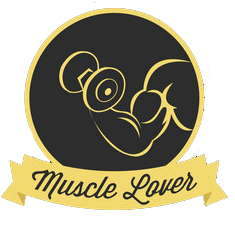

Кто я такой?
Начинающий фронтенд разработчик, поклонник здорового образа жизни, музыкант, любитель велосипедов и творчества.
Краткая биография
Семья
Родился 19 марта 1995 году в Украине, город Николаев, в семье учительницы и электрика. Полное имя Просолович Александр Романович.
Учеба
11 лет учился в школе №7, дальше поступил в политехнический институт в Николаеве на специальность "Дорожный транспорт", паралельно учился в коледже НКИ по специальности "ДВС".
На 4 курс перешел в киевский университет Украина, специальность "Компьютерные науки".
Навыки
Базовые навыки фронтенд разработчика и небольшая практика.
Успешно закончил интерактивные курсы по верстке на
HTML Academy и SoloLearn.
-
HTML5
Семантическая вёрстка, БЭМ, доступность, скринридеры. В процессе изучения Responsive.
-
CSS3
Селекторы, псевдоэлементы, флекс-боксы, LESS & GULP, префиксы.
-
Git
Десктоп и консоль, знание принципов работы и основных комманд.
-
JS
Подключение скриптов, условия, функции, переменные.
Увлечения
-

Люблю музыку, от классики до DeathCore. Играл в рок группе. Любимые инструменты: гитара, барабаны, пианино.
-

Веду здоровый образ жизни, стараюсь заниматься спортом и активным отдыхом.
-

Есть навыки построения фото и видео композиции, владение мануальной техникой и постпродакшн.
-

Нравятся компьютеры, считаю что каждому необходимо изучать Computer Science.
-
Бережно отношусь к природе, люблю путешествывать.
Стремления
Мечтаю работать в сфере веб-разработки, развиваться во всех направлениях и быть счастливым.